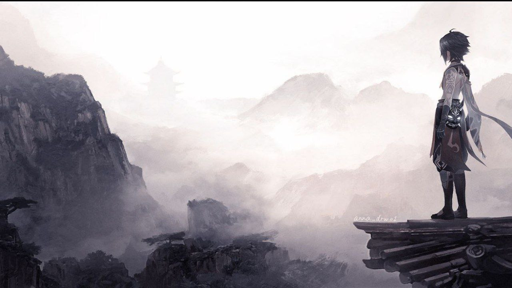
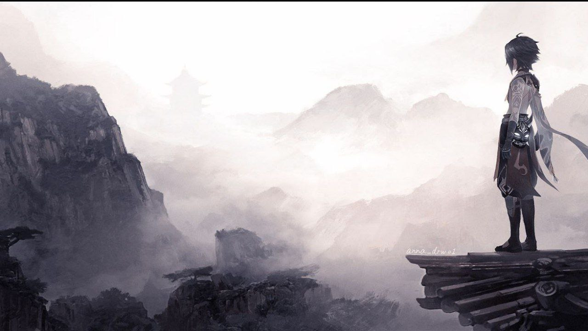
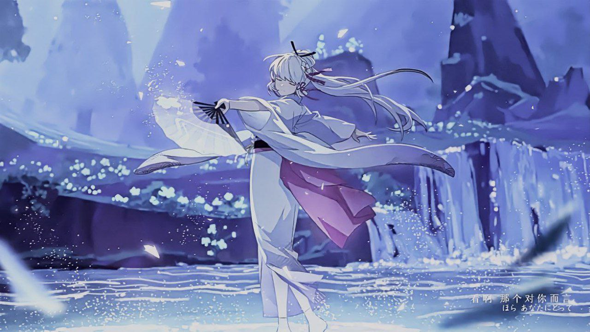
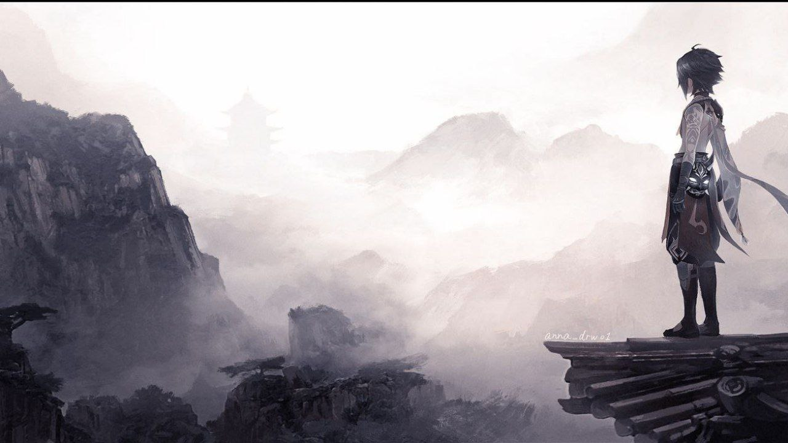
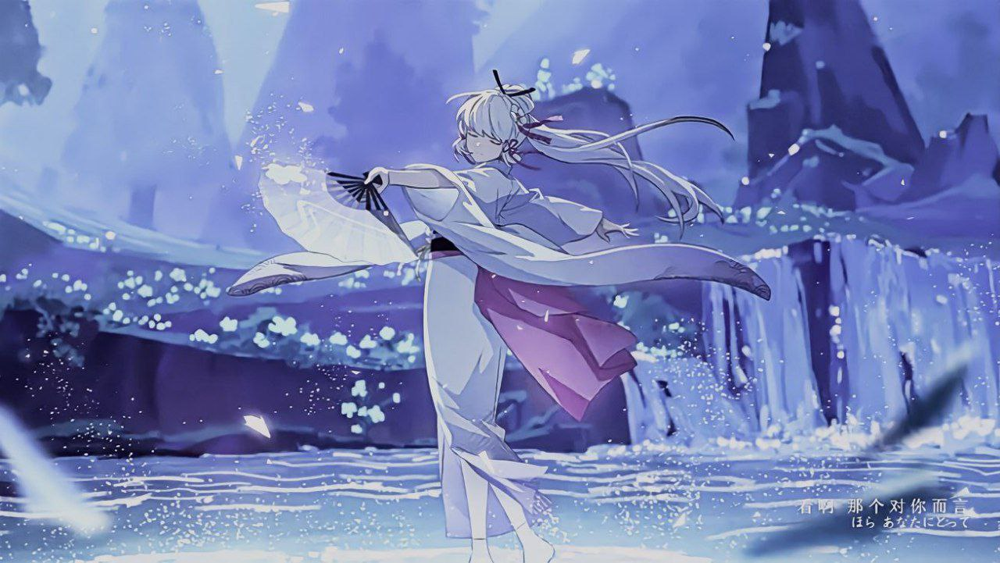
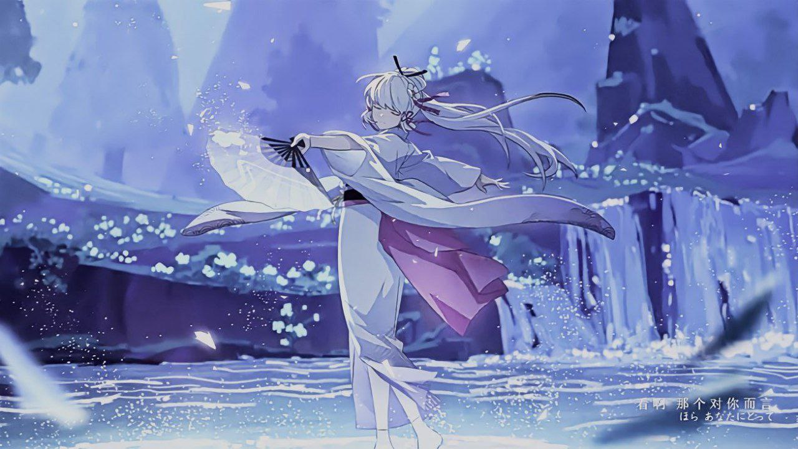
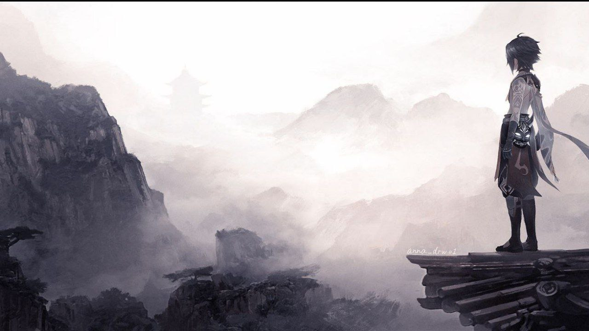
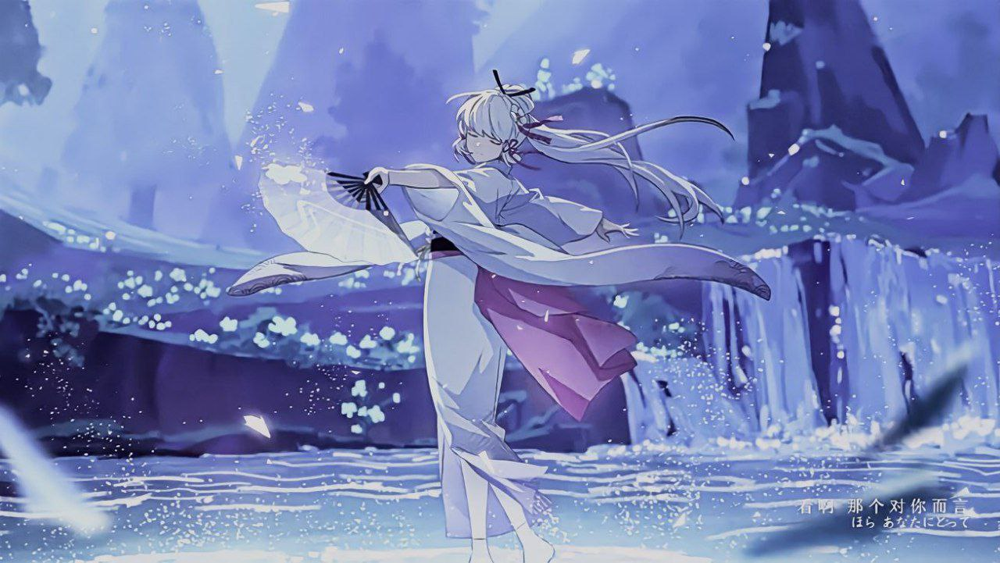

 





MY SELF
Name: Nurul Afiqah binti Mansor
Age: 21 years old
Address: 13 Kampung Permatang Tok Dik, 09400 Padang Serai, Kedah
Hobby: Reading, Drawing, Colouring, Gaming, Playing Badminton
Ambition: Cartoon programmer
Interest: Art, Anime, Comic, Manhwa, Manhua, Manga, Genshin Impact
Favourite colour: Red, Black
Favourite food: Pudding, Sushi, Porridge, Ice Cream
Favourite drink: Fruit Juice, Chocolate Milk
Slogan: "If you fail in your life once or twice, never give up...because there are more event you can do better in your life that can make you happy."
I love art because I like to drawing. Art is something that I use to express my feeling so everyone cannot understand what the real expression of my emotional. I use to scroll and search about art or the picture of art. It give my imagination run wild and active my own fantasy world. Sometime when I feel trouble or problem, I always watch picture of art. Art have many type, among them that I like to see is art of animation such as 3d or 2d animation.
Picture of art above was one of the favourite type of art that I use to see. Behind the scene of that art is very painful meaning before the reality hit. It is art of the novel name Omnicients Reader Viewpoint (ORV). Synopsis of the novel begin when the world began to transform into chaos. The main character name Kim Dokja (left) he is a person is just only a normal human that read novel online. His life were miserable. He got bullied, throw away and everything that he go through were only bad thing. But until the world turn into chaos his life were change. He help many people without them to paying back what he was done. But in the end of the story, he lost in the mid of air, gone forever leaving his companions. This picture is one of the art of the novel. It just like us, Sometime we never knew that we hurt someone that give the biggest impact in their live. Even to our best friend.We dont feel it until the day we lost them forever. The pain of guilty and sadness tell us how precious that person to us. But what we can do? it just in the past and now thay have gone in our life. The picture of memory just the only thing we have. All of the feeling that we feel through a picture that we call a memory.
This is a video of how making an art that I use to watch. When I have free time .